Uxntal Opcodes
Uxn has 32 standard opcodes and 4 immediate opcodes. In the table below, the pipe(|) character
indicates an effect on the return stack, the pc is the program counter, a value8 indicates a byte
length, a value* indicates a short length, an unspecified length follows the short mode and a [value] is read from memory.
Stack I Logic Memory I Arithmetic BRK -- EQU a b -- a=b LDZ abs8 -- [abs8] ADD a b -- a+b INC a -- a+1 NEQ a b -- a≠b STZ val abs8 -- SUB a b -- a-b POP a -- GTH a b -- a>b LDR rel8 -- [rel8] MUL a b -- a×b NIP a b -- b LTH a b -- a<b STR val rel8 -- DIV a b -- a÷b Stack II Stash Memory II Bitwise SWP a b -- b a JMP addr -- LDA abs* -- [abs*] AND a b -- a&b ROT a b c -- b c a JCN cond8 addr -- STA val abs* -- ORA a b -- a|b DUP a -- a a JSR addr -- | pc* DEI dev -- [dev] EOR a b -- a^b OVR a b -- a b a STH a -- | a DEO val dev -- SFT a sft8 -- res LIT -- [pc*] JCI cond8 -- JMI -- JSI -- | pc*
Modes
An opcode is any name in which the 3 first characters are found in the opcode table, followed by any combination of 2, k and r. Each opcode has 3 possible modes, which can combined:
- The short mode 2 operates on shorts, instead of bytes.
- The keep mode k operates without consuming items.
- The return mode r operates on the return stack.
| INC2r | |||||||
|---|---|---|---|---|---|---|---|
| k | r | 2 | opcode | ||||
| 0 | 1 | 1 | 0 | 0 | 0 | 0 | 1 |
By default, operators consume bytes from the working stack, notice how in the
following example only the last two bytes #45 and #67
are added, even if there are two shorts on the stack.
#1234 #4567 ADD12 34 ac
The short mode consumes two bytes from the stack. In the case of jump opcodes, the short-mode operation jumps to an absolute address in memory. For the memory accessing opcodes, the short mode operation indicates the size of the data to read and write.
#1234 #4567 ADD2 57 9b
The keep mode does not consume items from the stack, and pushes the result on top. Every opcode begins by popping values from the stack before operating on them. This mode keeps a copy of the stack pointer to recover after the popping stage.
#1234 #4567 ADD2k 12 34 45 67 57 9b
The return mode swaps the stacks on which an opcode
operates. Under this mode, a return address will be pushed to the working
stack, and stashing will take from the return stack. For that reason, there is
no return opcode. For example, the JSR opcode pushes the
return address onto the return stack, and JMP2r jumps to that
address.
LITr 12 #34 STH ADDr STHr 46

Immediate opcodes
Immediate opcodes are operators that do not take items from the stack, but read values stored immediately after the opcode in the program's memory. Uxntal has 4 immediate opcodes:
- The literal LIT opcode, also written as #.
- The jump !routine.
- The conditional jump ?routine.
- The subroutine routine.
The immediate jump opcodes are slightly faster than their standard opcode counterparts, but do not have modes and cannot be used to do pointer arithmetic. The address value of the immediate opcodes are stored in memory as relative shorts, enabling routines making use of these opcodes to be moved around in the program's memory.
@on-reset ( -> )
#0007 fac-rec BRK
@fac-rec ( n* -- res* )
#0001 GTH2k ?{ NIP2 JMP2r }
OVR2 SWP2 SUB2 fac-rec MUL2 JMP2r
To learn more about each opcode, see the Opcode Reference.
The Uxntal Opcode Reference
| INC2r | |||||||
|---|---|---|---|---|---|---|---|
| k | r | 2 | opcode | ||||
| 0 | 1 | 1 | 0 | 0 | 0 | 0 | 1 |
This documentation includes hand gestures, and glyphs, which might serve a dual purpose; both enabling the usage of Uxntal outside of the computer, as well as to help students to familiarize themselves with hexadecimal finger-counting and bitwise operations.
| 00 | 01 | 02 | 03 | 04 | 05 | 06 | 07 | 08 | 09 | 0a | 0b | 0c | 0d | 0e | 0f | |
|---|---|---|---|---|---|---|---|---|---|---|---|---|---|---|---|---|
| 00 | BRK | INC | POP | NIP | SWP | ROT | DUP | OVR | EQU | NEQ | GTH | LTH | JMP | JCN | JSR | STH |
| 10 | LDZ | STZ | LDR | STR | LDA | STA | DEI | DEO | ADD | SUB | MUL | DIV | AND | ORA | EOR | SFT |
| 20 | JCI | INC2 | POP2 | NIP2 | SWP2 | ROT2 | DUP2 | OVR2 | EQU2 | NEQ2 | GTH2 | LTH2 | JMP2 | JCN2 | JSR2 | STH2 |
| 30 | LDZ2 | STZ2 | LDR2 | STR2 | LDA2 | STA2 | DEI2 | DEO2 | ADD2 | SUB2 | MUL2 | DIV2 | AND2 | ORA2 | EOR2 | SFT2 |
| 40 | JMI | INCr | POPr | NIPr | SWPr | ROTr | DUPr | OVRr | EQUr | NEQr | GTHr | LTHr | JMPr | JCNr | JSRr | STHr |
| 50 | LDZr | STZr | LDRr | STRr | LDAr | STAr | DEIr | DEOr | ADDr | SUBr | MULr | DIVr | ANDr | ORAr | EORr | SFTr |
| 60 | JSI | INC2r | POP2r | NIP2r | SWP2r | ROT2r | DUP2r | OVR2r | EQU2r | NEQ2r | GTH2r | LTH2r | JMP2r | JCN2r | JSR2r | STH2r |
| 70 | LDZ2r | STZ2r | LDR2r | STR2r | LDA2r | STA2r | DEI2r | DEO2r | ADD2r | SUB2r | MUL2r | DIV2r | AND2r | ORA2r | EOR2r | SFT2r |
| 80 | LIT | INCk | POPk | NIPk | SWPk | ROTk | DUPk | OVRk | EQUk | NEQk | GTHk | LTHk | JMPk | JCNk | JSRk | STHk |
| 90 | LDZk | STZk | LDRk | STRk | LDAk | STAk | DEIk | DEOk | ADDk | SUBk | MULk | DIVk | ANDk | ORAk | EORk | SFTk |
| a0 | LIT2 | INC2k | POP2k | NIP2k | SWP2k | ROT2k | DUP2k | OVR2k | EQU2k | NEQ2k | GTH2k | LTH2k | JMP2k | JCN2k | JSR2k | STH2k |
| b0 | LDZ2k | STZ2k | LDR2k | STR2k | LDA2k | STA2k | DEI2k | DEO2k | ADD2k | SUB2k | MUL2k | DIV2k | AND2k | ORA2k | EOR2k | SFT2k |
| c0 | LITr | INCkr | POPkr | NIPkr | SWPkr | ROTkr | DUPkr | OVRkr | EQUkr | NEQkr | GTHkr | LTHkr | JMPkr | JCNkr | JSRkr | STHkr |
| d0 | LDZkr | STZkr | LDRkr | STRkr | LDAkr | STAkr | DEIkr | DEOkr | ADDkr | SUBkr | MULkr | DIVkr | ANDkr | ORAkr | EORkr | SFTkr |
| e0 | LIT2r | INC2kr | POP2kr | NIP2kr | SWP2kr | ROT2kr | DUP2kr | OVR2kr | EQU2kr | NEQ2kr | GTH2kr | LTH2kr | JMP2kr | JCN2kr | JSR2kr | STH2kr |
| f0 | LDZ2kr | STZ2kr | LDR2kr | STR2kr | LDA2kr | STA2kr | DEI2kr | DEO2kr | ADD2kr | SUB2kr | MUL2kr | DIV2kr | AND2kr | ORA2kr | EOR2kr | SFT2kr |
- In the a b -- c d notation, "a b" represent the state of the stack before the operation, "c d" represent the state after the operation, with "b" and "d" on top of the stack, respectively.
- The PC, or program counter, is the location in memory right after the reading of an opcode. Immediate opcodes will have an offset equal to the length of the data stored immediately after the opcode.
Break
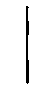
BRK -- Ends the evalutation of the current vector. This opcode has no modes.
Jump Conditional Immediate
JCI cond8 -- Pops a byte from the working stack and if it is not zero, moves the PC to a relative address at a distance equal to the next short in memory, otherwise moves PC+2. This opcode has no modes.
#0a DUP ?label INC @label ( 0a )
#0a #01 ?{ INC } ( 0a )
#0a #00 ?{ INC } ( 0b )
Jump Immediate
JMI -- Moves the PC to a relative address at a distance equal to the next short in memory. This opcode has no modes.
#0a !label INC @label ( 0a )
#0a !{ INC } ( 0a )
Jump Stash Return Immediate
JSI -- Pushes PC+2 to the return-stack and moves the PC to a relative address at a distance equal to the next short in memory. A plain label name resolves to a JSI operation. This opcode has no modes.
#07 #04 modulo BRK ( 03 ) @modulo ( a mod -- res ) DIVk MUL SUB JMP2r
Literal
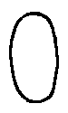
LIT -- a
Pushes the next bytes in memory, and moves the PC forward by the same number of bytes (i.e: 1 byte if short mode is off or 2 bytes if it is on). The LIT opcode always has the keep mode active. Notice how the 0x00 opcode, with the keep bit toggled, is the location of the literal opcodes.
LIT 12 ( 12 ) LIT2 abcd ( ab cd )
Increment
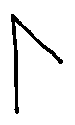
INC a -- a+1 Increments the value at the top of the stack, by 1.
#01 INC ( 02 ) #0001 INC2 ( 00 02 ) #0001 INC2k ( 00 01 00 02 )
Pop
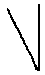
POP a -- Removes the value at the top of the stack. POPk is the canonical NOP.
#1234 POP ( 12 ) #1234 POP2 ( ) #1234 POP2k ( 12 34 )
Nip
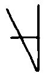
NIP a b -- b Removes the second value from the stack. This is practical to truncate a short into a byte.
#1234 NIP ( 34 ) #1234 #5678 NIP2 ( 56 78 ) #1234 #5678 NIP2k ( 12 34 56 78 56 78 )
Swap
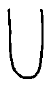
SWP a b -- b a Exchanges the first and second values at the top of the stack.
#1234 SWP ( 34 12 ) #1234 SWPk ( 12 34 34 12 ) #1234 #5678 SWP2 ( 56 78 12 34 ) #1234 #5678 SWP2k ( 12 34 56 78 56 78 12 34 )
Rotate
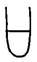
ROT a b c -- b c a Rotates three values at the top of the stack, to the left, wrapping around.
#1234 #56 ROT ( 34 56 12 ) #1234 #56 ROTk ( 12 34 56 34 56 12 ) #1234 #5678 #9abc ROT2 ( 56 78 9a bc 12 34 ) #1234 #5678 #9abc ROT2k ( 12 34 56 78 9a bc 56 78 9a bc 12 34 )
Duplicate
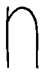
DUP a -- a a Duplicates the value at the top of the stack.
#1234 DUP ( 12 34 34 ) #12 DUPk ( 12 12 12 ) #1234 DUP2 ( 12 34 12 34 )
Over
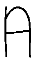
OVR a b -- a b a Duplicates the second value at the top of the stack.
#1234 OVR ( 12 34 12 ) #1234 OVRk ( 12 34 12 34 12 ) #1234 #5678 OVR2 ( 12 34 56 78 12 34 ) #1234 #5678 OVR2k ( 12 34 56 78 12 34 56 78 12 34 )
Equal
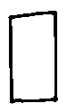
EQU a b -- bool8 Pushes 01 to the stack if the two values at the top of the stack are equal, 00 otherwise.
#1212 EQU ( 01 ) #1234 EQUk ( 12 34 00 ) #abcd #ef01 EQU2 ( 00 ) #abcd #abcd EQU2k ( ab cd ab cd 01 )
Not Equal
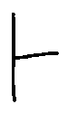
NEQ a b -- bool8 Pushes 01 to the stack if the two values at the top of the stack are not equal, 00 otherwise.
#1212 NEQ ( 00 ) #1234 NEQk ( 12 34 01 ) #abcd #ef01 NEQ2 ( 01 ) #abcd #abcd NEQ2k ( ab cd ab cd 00 )
Greater Than
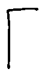
GTH a b -- bool8 Pushes 01 to the stack if the second value at the top of the stack is greater than the value at the top of the stack, 00 otherwise.
#1234 GTH ( 00 ) #3412 GTHk ( 34 12 01 ) #3456 #1234 GTH2 ( 01 ) #1234 #3456 GTH2k ( 12 34 34 56 00 )
Lesser Than
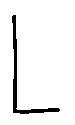
LTH a b -- bool8 Pushes 01 to the stack if the second value at the top of the stack is lesser than the value at the top of the stack, 00 otherwise.
#0101 LTH ( 00 ) #0100 LTHk ( 01 00 00 ) #0001 #0000 LTH2 ( 00 ) #0001 #0000 LTH2k ( 00 01 00 00 00 )
Jump
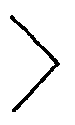
JMP addr -- Moves the PC by a relative distance equal to the signed byte on the top of the stack, or to an absolute address in short mode.
,&skip-rel JMP BRK &skip-rel #01 ( 01 )
Jump Conditional
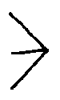
JCN cond8 addr -- If the byte preceeding the address is not 00, moves the PC by a signed value equal to the byte on the top of the stack, or to an absolute address in short mode.
#abcd #01 ,&pass JCN SWP &pass POP ( ab ) #abcd #00 ,&fail JCN SWP &fail POP ( cd )
Jump Stash Return
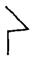
JSR addr -- | ret16 Pushes the PC to the return-stack and moves the PC by a signed value equal to the byte on the top of the stack, or to an absolute address in short mode.
,&routine JSR ( | PC* ) ,&get JSR #01 BRK &get #02 JMP2r ( 02 01 )
Stash
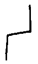
STH a -- | a Moves the value at the top of the stack to the return stack. Note that with the r-mode, the stacks are exchanged and the value is moved from the return stack to the working stack.
#12 STH ( | 12 ) LITr 34 STHr ( 34 )
Load Zero-Page
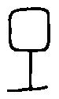LDZ addr8 -- value Pushes the value at an address within the first 256 bytes of memory, to the top of the stack.
|00 @cell $2 |0100 .cell LDZ ( 00 )
Store Zero-Page
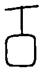STZ val addr8 -- Writes a value to an address within the first 256 bytes of memory.
|00 @cell $2 |0100 #abcd .cell STZ2 { ab cd }
Load Relative
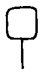LDR addr8 -- value Pushes a value at a relative address in relation to the PC, within a range between -128 and +127 bytes, to the top of the stack.
,cell LDR2 BRK @cell abcd ( ab cd )
Store Relative
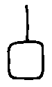STR val addr8 -- Writes a value to a relative address in relation to the PC, within a range between -128 and +127 bytes.
#1234 ,cell STR2 BRK @cell $2 ( )
Load Absolute
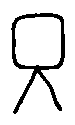LDA addr16 -- value Pushes the value at a absolute address, to the top of the stack.
;cell LDA BRK @cell abcd ( ab )
Store Absolute
STA val addr16 -- Writes a value to a absolute address.
#abcd ;cell STA BRK @cell $1 ( ab )
Device Input
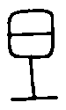DEI device8 -- value Pushes a value from the device page, to the top of the stack. The target device might capture the reading to trigger an I/O event.
Device Output
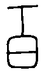DEO val device8 -- Writes a value to the device page. The target device might capture the writing to trigger an I/O event.
Add
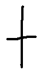
ADD a b -- a+b Pushes the sum of the two values at the top of the stack.
#1a #2e ADD ( 48 ) #02 #5d ADDk ( 02 5d 5f ) #0001 #0002 ADD2 ( 00 03 )
Subtract

SUB a b -- a-b Pushes the difference of the first value minus the second, to the top of the stack.
#08 #03 SUB ( 05 ) #08 #02 SUBk ( 08 02 06 ) #2000 #1000 SUB2 ( 10 00 )
Multiply
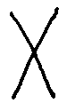
MUL a b -- a*b Pushes the product of the first and second values at the top of the stack.
#06 #02 MUL ( 0c ) #08 #02 MULk ( 08 02 10 ) #0800 #0002 MUL2 ( 10 00 )
Divide
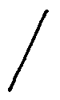
DIV a b -- a/b Pushes the quotient of the first value over the second, to the top of the stack. A division by zero pushes zero on the stack. The rounding direction is toward zero.
#10 #02 DIV ( 08 ) #10 #03 DIVk ( 10 03 05 ) #0010 #0000 DIV2 ( 00 00 )
And
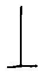
AND a b -- a&b Pushes the result of the bitwise operation AND, to the top of the stack.
#fc #3f AND ( 3c )
Or
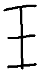
ORA a b -- a|b Pushes the result of the bitwise operation OR, to the top of the stack.
#fc #3f ORA ( ff )
Exclusive Or
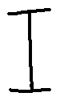
EOR a b -- a^b Pushes the result of the bitwise operation XOR, to the top of the stack.
#fc #3f EOR ( c3 )
Shift
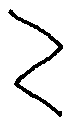
SFT a shift8 -- c Shifts the bits of the second value of the stack to the left or right, depending on the control value at the top of the stack. The high nibble of the control value indicates how many bits to shift left, and the low nibble how many bits to shift right. The rightward shift is done first.
#34 #10 SFT ( 68 ) #34 #01 SFT ( 1a ) #34 #33 SFTk ( 34 33 30 ) #1248 #34 SFTk2 ( 12 48 34 09 20 )
- Rekka Bellum, illustration
- Kira Oakley, contributor
- Ismael Venegas Castello, contributor
Using and operating on negative numbers in Uxntal.
Uxn doesn't have built-in support for negative integers. However, you can emulate signed numbers by treating some unsigned values as negative. For example, treating unsigned bytes as signed results in the following:
| hex | 00 | 01 | 02 | 7e | 7f | 80 | 81 | 82 | fd | fe | ff | ||
|---|---|---|---|---|---|---|---|---|---|---|---|---|---|
| unsigned | 0 | 1 | 2 | 126 | 127 | 128 | 129 | 130 | 253 | 254 | 255 | ||
| signed | 0 | 1 | 2 | 126 | 127 | -128 | -127 | -126 | -3 | -2 | -1 |
The first 128 integers (0-127) are represented the same as unsigned and signed, but the latter 128 are different. The basic idea here is that for values greater than #7f (127) we subtract 256 to get their signed value:
signed = n < 128 ? n : n - 256
It turns out that many unsigned operations "work" even when treating the values as signed. (In other words, you get the same result as you would have using a language with signed integer types.) The following arithmetic instructions work correctly with "signed" values:
#13 #ff ADD returns #12 #02 #03 SUB returns #ff #02 #ff MUL returns #fe
Be careful! The smallest negative value (-128 for bytes, -32768 for shorts) has no corresponding positive value. This means that some operations will not work as expected:
#80 #ff MUL returns #80 (-128 * -1 = -128) #00 #80 SUB returns #80 (0 - (-128) = -128)
Also, negative and positive values will "wrap around" in the usual way when dealing with two's-complement representations:
#7f #01 ADD returns #80 (127 + 1 = -128) #80 #01 SUB returns #7f (-128 - 1 = 127) #80 #80 ADD returns #00 (-128 + (-128) = 0)
Other instructions will not handle "negative" integers correctly. These routines will safely compare "signed" bytes:
@signed-lth ( x y -- res ) DUP2 #8080 AND2 EQU ?&diff LTH JMP2r &diff LTH #00 NEQ JMP2r @signed-gth ( x y -- res ) DUP2 #8080 AND2 EQU ?&diff GTH JMP2r &diff GTH #00 NEQ JMP2r
Similarly, division will not correctly handle signed values. The simplest way to handle this is to make both values non-negative, do unsigned division (i.e. DIV) and then set the correct sign at the end.
@abs ( x -- abs-x sign ) DUP #7f GTH #fe MUL INC STHk MUL STHr JMP2r @signed-div ( x y -- x/y ) abs STH SWP abs STH SWP DIV MULr STHr MUL JMP2r
The unsigned shift operator treats the sign bit like any other. This means shifting left will lose the sign bit (reversing the sign) and that shifting right will convert the sign bit into a value bit. Signed numbers will also need their own routines for decimal input and output, if those are required by your program.
@signed-print ( num -- )
( - ) DUP #80 LTH ?{ LIT "- #18 DEO #7f AND #80 SWP SUB }
( 100 ) DUP #64 DIV signed-print/emit
( 10 ) DUP #0a DIV signed-print/base
&base ( digit -- ) #0a DIVk MUL SUB
&emit ( digit -- ) LIT "0 ADD #18 DEO JMP2r
If you need a sign-aware shift you'll likely want to convert negatives to positive values, perform a shift, and then restore the sign. Keep in mind that -128 cannot be converted to a positive value, and may require special treatment.
- Guide by d_m
incoming: uxntal uxntal reference